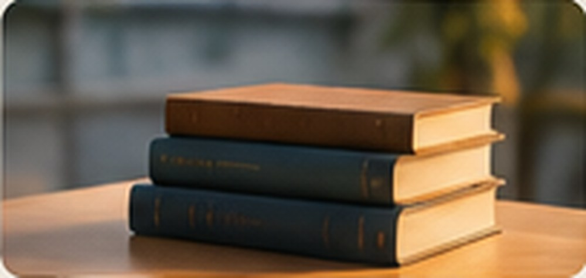
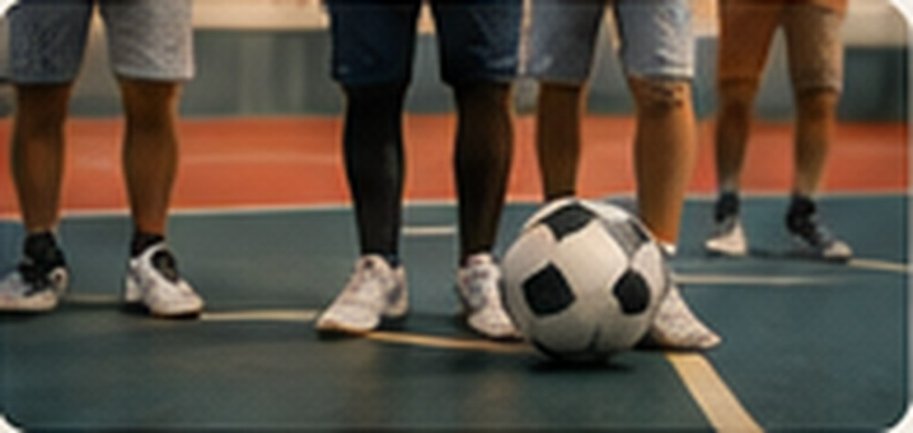
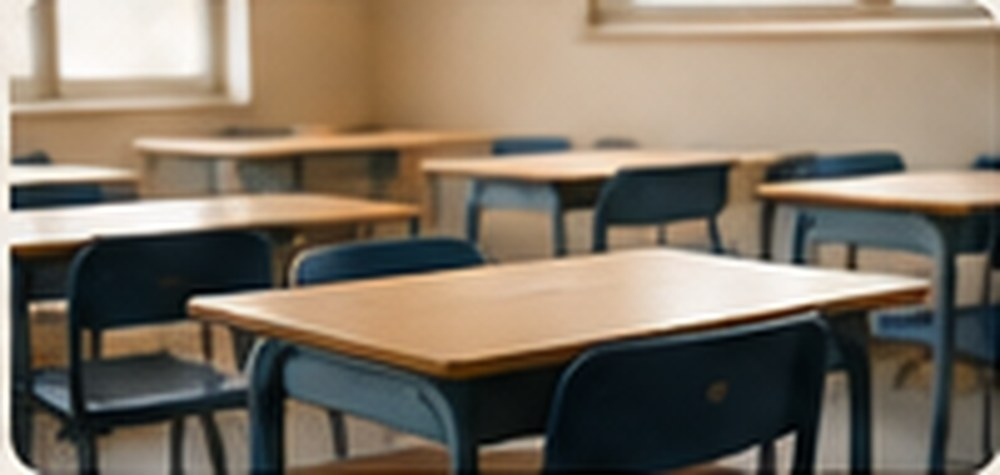
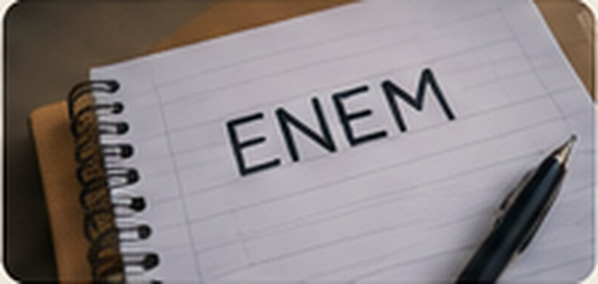

01

PRIMEIROS ANOS
O começo de tudo
Os primeiros contatos com a escola, as descobertas, as brincadeiras e a curiosidade de aprender coisas novas.
Um espaço para reunir experiências, aprendizados e ideias que fizeram parte da minha caminhada escolar — e que continuam construindo quem eu sou.

UMA NOVA FASEDa curiosidade dos primeiros anos aos desafios do Ensino Médio, cada fase trouxe descobertas. Aqui, as lembranças se encontram com os textos produzidos ao longo dessa jornada.
Uma linha do tempo ilustrativa para representar fases e experiências da vida escolar.

Os primeiros contatos com a escola, as descobertas, as brincadeiras e a curiosidade de aprender coisas novas.

Uma fase de crescimento, amizades e aprendizados que ajudaram a construir a base para os próximos desafios.

Mais responsabilidades, novos conhecimentos e atividades que exigiram dedicação, organização e persistência.
O encerramento de um ciclo representa também o início de novas possibilidades, planos e objetivos.
ⓘ As fotografias desta linha do tempo são ilustrativas e representam momentos escolares de forma simbólica. Não são fotos pessoais do Lucas.
17 textos sobre sociedade, tecnologia, meio ambiente e os desafios do nosso tempo.
Este portfólio reúne parte da minha trajetória escolar e textos que representam temas importantes para mim. Mais do que guardar atividades, é uma forma de reconhecer o caminho percorrido e olhar para o que vem pela frente.
Voltar ao início ↑Todo fim também pode ser um começo.
LUCAS GOMES · 2026